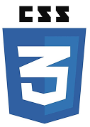

About me
Who am I?
I am Finn Singer. I am passionate about software engineering and have a keen interest in web development.
This site shows a bit about me and showcases some of my current and past projects and how I worked through them.
Contact
Email: finnsinger@icloud.com
GitHub: https://github.com/soapyL
LinkedIn: https://linkedin.com/in/finnsinger
Website: https://project.finnsinger.co.uk
Whilst my website is still in development, please contact me if you wish to access the full feature set.

After Java, Python was the next language I learnt and helped me to apply the knowledge of how a programming language works into a new scenario. It opened doors for simpler code, use at school and easier debugging. For several years I worked solely on Python programs at home and at school, refining my ability to code using this second tool in my toolbox.

With the prospect of new programming languages and Python’s Tkinter for simple GUI interfaces, HTML seemed to me like a shining light with its simplistic tags and easy to make interfaces, combined with a bit of CSS and I was turning out login pages like never before. I failed however, to realise the importance of Javascript and how it is an integral part to the triplet.
I did a weeks work experience at a Web Dev company, and after that I became enamored with web based applications. I already had a free 3rd party hosted website, and by using PHP I added loads of functionality I never knew how to do previously. Cookies, sessions, tokens and data wrappers such as XML and JSON all became factors in my code, forcing me to find a solution using not just HTML and PHP, but also using AJAX and JQuery to communicate with MariaDB servers with user data. The whole concept of a frontend and backend was introduced to me and I learnt how to actually link the two together. The archive for this code is here
I taught myself a fair amount of C# so I had a more common backend language to use. This knowledge was then expanded when I went to college a few years later, as we used C# as our primary language. I continue to use C# at college, however I don’t use it as much at home.
Finally, JavaScript caught up with me and I realised I had to start becoming familiar with it if I wanted to go on and do more complex projects. Unlike with C# where I spent a week forcing myself through all the W3Schools tutorials and Microsoft Documentation, it took me several months before I started to understand the principals behind JS and how to properly manage JSON between server and client.
With the introduction of JavaScript to my catalogue, I started to move away from the comfort of phpMyAdmin and start to set up my own databases and tables with my own scripts to automatically set and reset data when I needed to. By this point I had moved away from my 3rd party hosted site, as I didn’t have console access to run my own scripts and software, so I chose to move to a tiny Amazon AWS EC2 instance where I could conduct my experiments. This gave me so much more freedom to choose how to store my data, though I continued to use MariaDB as that is what I became familiar with.
After wrapping up a large portion of my web based project, I decided to move more towards a low-level project, and I wanted to broaden my horizons and investigate how operating systems are built from the ground up. To do this, I learnt x86 assembly and a decent amount of C so that I could start writing an OS. This project is obviously a massive undertaking and is still ongoing, however I have details of current progress below. The low-level nature of C however has definitely given me a new found appreciation for kernel developers and the work that goes into it.
When preparing to redesign my website, I figured a strong client-server connection would be the best option for security and reliability. This led to me discovering NodeJS which I used for my REST API. The breakdown of my design is further down, however Node was the first step into a clearly segregated backend and opened doors for the rest of the project.
For the third rewrite of my website, I wanted to add more functionality than ever and in my mind that meant making my primarily desktop oriented website more accessible on small screens. React gave me the chance to create a smooth PWA with SSR designed for mobile first then desktop. The result of this iteration results in lightning quick load times and works seamlessly with Socket.IO.
The use of Bootstrap 5, especially the React modified version of the Bootstrap framework allowed me in my final iteration to build an app much quicker as the prebuilt components are much easier to work with than bare CSS. Although it can be limiting, I view the use of Bootstrap as a tool to be expanded upon rather than the final design.
Project 1: The Website
The website has been my little project since about 2022, and has gone through three major iterations where a re-wrote the entire site.
I won’t cover the previous iterations, however you can find the archived GitHub repo for the first edition here.
For my explanation of each step of the development, I will break it down into 5 parts:
- The Frontend
- The Styling
- The Backend
- The Websockets
- The Server Configuration
I unfortunately am not willing to expose the whole source code for the project as the project is still in development and will be for some time. It is an ongoing experiment and therefore does have bugs and security holes I wish to be left alone for now as I don’t have the time to QA test all my code as much as I would like. That said, I have provided snippets of interesting solutions I found along the way.
The frontend design began with Figma, as I had learnt so much about how a website is made at my work experience week and I wanted to apply what I learnt to my project, and this started with UI/UX design.
The designer I spoke to gave me many valuable tips and many of those I now incorporate into even non web related projects such as PowerPoints for when I teach or posters for college.
Consistency is key.
This is why I opted for React. In my mind React made the most sense as it’s fast, versatile, modern, and easy to turn into a progressive web app later down the line. Because of that, almost all my design was built with an app in mind, forcing me to develop my ideas not for desktop but for mobile that expands to desktop: it’s about opening the market after all since over 60% of website connections are from a mobile phone. This meant the inclusion of hamburger menus, modals, off screen menus and minimalism helped to declutter the screen and simplify the user experience.
The use of React also allowed for easy implementation of a service worker for the PWA and therefore caching of files, making the app super snappy. I learnt about React components and hooks to create a set of pages which used a single router to funnel the user.
<AuthProvider>
<SubscriptionProvider>
<Router>
<Routes>
<Route path="/login" element={<Login setSignedIn={setSignedIn} />} />
<Route path="/register" element={<Register setSignedIn={setSignedIn}/>} />
<Route path="/home" element={signedIn ? (<Home setSignedIn={setSignedIn} />) : (<Navigate to="/" />)} />
<Route path="/site-information" element={<SiteInformation />} />
<Route path="/" element={signedIn ? (<Navigate to="/home" />) : (<IndexPage />)} />
<Route path="/cms" element={signedIn ? (<Cms setSignedIn={setSignedIn} />) : (<Navigate to="/" />)} />
<Route path="/settings" element={signedIn ? (<Settings setSignedIn={setSignedIn} />) : (<Navigate to="/" />)} />
<Route path="/dashboard" element={signedIn ? (<ChatDash setSignedIn={setSignedIn} />) : (<Navigate to="/" />)} />
</Routes>
</Router>
</SubscriptionProvider>
</AuthProvider>
The code above shows my simple routing mechanism that directs user based off their session validity which is managed by a React Context for continuity across pages, and by analysing the URL ending. This makes for a nice tidy URL and simple queries for navigation.
Google Maps API
There are currently 11 React scripts used to form the visual frontend, and in the Home component, I designed two features. An iframe to display content of an admin’s choice, and a Google Maps integration.
The former is merely an updated version of my original system which used JSON to store and move the details of a video, and had to be changed in the actual JSON configuration itself, however this version can display content from any site, and is editable from a CMS built into the website for users of a high enough privilege.
The latter uses Google Maps API to request the user’s location, feed that to Google Maps, return all McDonald’s within a 10km radius, selects the first one then displays the route on the map. It also features selectable driving and walking routes depending on the user’s preference. Although it works, the code is incredibly temperamental and often suffers after a harsh reload. It also takes several seconds to retrieve the user’s location which gives a perceived slow load time of the page when it is actually the fault of the device. I have tried to optimise it, however I find working with the Google Maps API incredibly frustrating and complex to use which often results in it just being half finished most of the time.
Below is the code that retrieves the user’s location. This whole feature is done in React with no connection to the backend as there is no need, however I did keep having issues with previous loads sticking and being cached incorrectly, though that should be fixed now.
const findUser = () => {
if (navigator.geolocation) { # Checks if user allowed location
navigator.geolocation.getCurrentPosition(
(position) => {
const { latitude, longitude } = position.coords; # Finds coordinate location of user
if (mapRef.current) {
setUserLocation({ lat: latitude, lng: longitude });
mapRef.current.setCenter({ lat: latitude, lng: longitude }); # Extracts latitude and longitude of coords
findNearestMcDonalds(latitude, longitude); # Calls API function
} else {
console.error('mapRef is null or not initialised');
}
},
() => {
alert("Geolocation permission denied.");
}
);
} else {
alert("Geolocation is not supported by this browser.");
}
};
Chat Client
The entire online messaging app is also incorporated into the main website itself, except the whole frontend takes up 518 lines of one single file. This app is designed to be a super quick light web based messaging service so users can access their contacts and chats on any device without having to download an app.
This feature was less about the unique selling point or actually using it, but more focused on a proof of concept; a project that has a fairly high level of complexity at least at my current level, and requires me to use all my knowledge of the languages, networks, and the devices themselves to make.
The current state of the chat client is almost finished, just small little finishing touches, however it took several months to achieve this. The chat client works in two parts: the frontend which manages the UI and handling sending the messages, and the backend on the server which manages receiving messages, forwarding them on to whom they are meant for, and sending the push notifications. The frontend is fairly simple, creating a secure websocket connection to the server so it can transfer data back and forth quickly, and keeps track of the contents of the text box, listens for incoming messages and updates the status indicator if the other user goes offline.
In the side bar the client also has people they have messaged automatically saved to the sidebar so they dont have to search for the user again. This is where the database comes into play. Because the chat client is web based, messages aren’t saved to the device unlike most apps, instead they are kept on the central server where they are then retrieved. This could cause some security concerns, however each chat is assigned a unique table which separates other user’s conversations, and all messages are encrypted during transmission, and are stored securely in the database. This method allows for the same conversation to be loaded onto any computer without any trace of the messages left on the device.
A major issue with this design is the scalability, and the massive servers and storage required to handle hundreds of thousand or millions of requests simultaneously, and this could cause bottle necks. A solution to this is instead of releasing the software as a competitor to other messaging apps, it could be made open source for the community to host themselves, with small scale groups using the network. This is how intend to release this software once I fully test and analyse my code.
Below I have shown how the frontend sends messages, and how it renders messages as they come in. These particular parts were particularly difficult to get working, though it seems so simple in hindsight.
const sendMessage = async () => {
if (newMessage && selectedUser) { # Ensures a user is selected
try {
await fetch('/api/sendMessage', { # Sends message to backend server database
method: 'POST',
headers: {
'Content-Type': 'application/json',
},
body: JSON.stringify({
recipientId: selectedUser.id,
senderName: userName,
message: newMessage,
type: 'message'
})
});
setMessages((prevMessages) => [...prevMessages, { sender_id: userId, message: newMessage }]); # Updates messages list
socket.current.emit('private_message', { recipientId: selectedUser.id, message: newMessage }); # Sends message
setNewMessage(''); # Resets text box
} catch (error) {
setError('Error sending message');
console.error(error);
}
}
};
const renderMessages = () => {
const elements = [];
if (Array.isArray(messages)) {
for (let i = 0; i < messages.length; i++) { # Adds each message to an array to display
elements.push(
<p key={i} className={ messages[i].sender_id === userId ? 'ownMessage' : '' }>
<strong>{ messages[i].sender_id === userId ? 'You' : targetName } : </strong> { messages[i].message }
</p>
);
}
}
return elements;
};
The backend consists pretty much of one 1073 line NodeJS file that does everything from managing the database, to handling API requests and websocket handling. I will cover websockets later, however in this section I shall look further into the structure of the API and how it communicates with the frontend.
The central file is distributed logically, which makes it easier to find specific functions in it. It looks something like this:
_
|
| Imports
|
V
_
|
|
| Database, CORS, Express, Redis, Vapid and Helmet setup
|
|
V
_
|
| Internal file storage and authentication functions
|
V
_
|
|
|
|
| API endpoints
|
|
|
|
V
_
|
| Socket.IO Messaging logic
|
V
_
| Server start
V
The breakdown of the backend into separate components within the same script allows for quicker response times without having to to worry about formatting data between servers; it just all stays as JSON. This makes it perfect for the small scale self-hosted use case mentioned earlier.
Imported Libraries
In terms of libraries I use, I have several.
Express and http for setting up the http server and handling connections; makes it easy to build the API from the built-in endpoint handling.
Redis for session handling and keeping track of session variables. I found Redis to be more reliable and more feature rich than express-session so that is what I use.
The MariaDB node library makes connecting to the database super simple and allows for steady and secure connections with minimal latency.
Helmet for request limiting makes it super simple to restrict potential DDoS attacks with simple IP based limiting. It also implements a security policy by default to prevent XSS attacks.
fs and multer are also both used to manage files stored on the server such as user icons and other media which can be uploaded.
web-push and nodemailer are both integral to the PWA implementation, as nodemailer allows me to send emails to clients for verification, newsletters and other contact, while web-push works well with IOS devices to send push notifications from the server. These are mainly used for the chat client but could easily be implemented in other ways.
Finally, Socket.IO for real time messaging and websocket handling. I am very much still learning the ins and outs of socket but I am steadily getting there.
Accounts
In terms of how the accounts work, all accounts must be whitelisted, and can be added through the CMS panel. This updates the database table which stores all allowed emails that can register. The register page contains email, password, forename and surname fields which are kept separate so individual fields such as the surname can be updated in the settings page. Passwords are of course hashed and never decrypted, ensuring user security. Special caution is also taken to ensure the password hash never leaves the server as to not incur potential security risks. Each user also has an authorisation level which can be changed by an admin, and dictates what sections of the website they can access. This ties into the verification process which is started as soon as an email is registered. The backend will send an email to the registered email and will contain a link with a unique identifier which is passed to an API endpoint to verify the email does exist. This then updates the field in the table according to the user and allows them access.
API Endpoints
There are 30 API endpoints which are all used to modify content, check details and authentication, and update tables in the database. All endpoints that require authenticated users also use an internal function to check the user’s validity.
Below is an example endpoint which is used to change a user’s profile image path. Notice the inclusion of ‘requireAuth’ in the defining statement. This calls the function below to check the session variables. Many of the endpoints follow a similar structure of check auth → update database → return status. The actual function that modifies the image and saves it to the correct folder in this example is called in ‘upload.single(‘profileImage’)’.This endpoint merely saves where the image if saved to. This frees up the thread to handle another request if needed.
app.post('/api/updateProfile', requireAuth, upload.single('profileImage'), async (req, res) => { # Checks auth
if (req.file) {
let conn;
try {
conn = await pool.getConnection(); # Connects to db
await conn.query('UPDATE _________ SET profile_link = ? WHERE id = ?',
[req.file.path, req.session.userId]]); # DB query
} catch (err) {
console.error(err);
res.status(500).json({ message: 'Database error' }); # Returns error
} finally {
if (conn) conn.release(); # Disconnects DB
}
res.status(200).json({ message: 'File uploaded successfully', filePath: req.file.path }); # Returns path
} else {
res.status(400).json({ message: 'No file uploaded' }); # Catch
}
});
function requireAuth(req, res, next) {
if (req.session.allow) { # Checks session
next();
} else {
res.redirect('/'); # Kicks if false
}
};
In the chat client, when a user sends a message, two network calls are made: one to the socket server and one to the API. The API one handles copying the message into the database with who sent the message, who to, what the message was, and a timestamp. This simple approach keeps the code simple and reduces the need for the websocket server to communicate with the database.
The database itself contains several standard tables for users and the associated data, the details for service workers when a user allows notification subscriptions, and tables for each conversation that is had between clients. This may seem like it could cause latency when retrieving or updating data, however the asynchronous nature of the database calls allow for rapid queries from the same device or network. To keep database sizes manageable, pictures or other forms of media except text and emojis are not permitted as it requires more bandwidth and space, potentially causing issues on slow networks. I do however plan to revisit this and see if I can get it to work with pictures.
The server configuration is very simple, just an Apache2 reverse proxy combined with the SSL key management.
The Apache server catches all requests, then depending on the URL will determine which server to send it to. For example a request to /api/foo will be sent to the NodeJS backend on one port, while websocket requests get upgraded to secure websockets and passed to the server on the frontend port which serves the static pages after the React build. All other HTTP requests are pushed to the frontend to be serviced.
Server and Network Specifications
The website currently is being hosted locally, as I moved from an AWS EC2 instance to my Raspberry Pi 5 8GB, as the EC2 only had 1 vCPU and 1GB of RAM as part of the free tier. This meant I was having issues with the development server crashing and when installing large NPM packages. With the increased RAM in my Pi, I can now run multiple sites much quicker without fear of crashing. This does however bring the security risk of exposing my public IP, which isn’t great.
To fix this I moved from Ionos as my domain name provider to Cloudflare, as that meant I could utilise their DNS Tunnel system which creates an outbound HTTPS connection from my server to Cloudflare servers, meaning none of my router ports need to be opened, and my IP is masked behind Cloudflare.
The tunnel is hosted on my Pi as that has high uptime, however the tunnel is also configured to connect to my larger media server which I use as a NAS amongst other things. This means I can connect securely to all my services through subdomains.
Apache Configuration
Because I copied my server configuration from the EC2 instance to the Pi, it needed a bit of tweaking, and is somewhat redundant considering Cloudflare acts as a reverse proxy as well, however it was easier to copy the pre-existing infrastructure than go through the pain again.
It does mean Cloudflare manages my edge SSL, and so all connections inside my network between the Pi, my other servers, and the website frontend and backend are all plain HTTP, however considering most of my traffic is just my friends and I, I dont have much reason to make the internal connection secure when all external connections are already secure up to the Pi.
Currently, this is how my website is processed (simplified but you still get the gist):
Client
|
| HTTPS
v
DNS
|
|
v
Cloudflare Tunnel
|
| HTTPS
v
|- - - - - - - - | - - - - - - - -| Home Network
|
v
Pi
|------------→ Other Servers
|
v
Apache Reverse Proxy
|
|
_______________|_______________
| |
| |
v v
HTTP
NodeJS Backend ←----------→ React Frontend
Project 2: The Operating System
The OS project is an ongoing project and is more of an experiment than anything else. It allows me to delve more into the low level code that drives all our systems, and learn how to make that myself.
I have found coding the OS very challenging, perhaps my most challenging yet, and I find myself drifting away from it for periods of time, but it is certainly an interesting project to have.
I have built everything from the ground up, including the bootloader, file system and FAT drivers as well as having to code my own C functions.
I haven’t got too far at the moment, only being able to boot from a floppy disk since it has a simple structure, and then having a printf statement print some text to the console, but that itself is rewarding to me and I am looking forward to getting my FAT drivers working.
The OS is targeted towards 32-bit machines, however I am still currently in 16-bit real mode but I’m working on it.
Development Tools
I use qemu as my virtual machine to test, with bochs to debug and view memory contents while it is running. For my assembler I am using NASM as it was the first thing I learnt to compile ASM with and works well for me. I then use GCC for C compilation and Watcom 16 bit C compiler for code that needs to be compiled differently.
A notable piece of code was a fix to Watcom compiler issue where it was giving me an error when compiling because it couldn’t compile a division function into 16 bit code, as the division was overflowing. I therefore had to write a custom assembly fix to perform this division for me. The code below shows how I did this:
global _x86_div64_32
_x86_div64_32:
; Make new call frame
push bp
mov bp, sp
push bx
; Divide upper 32 bits
mov eax, [bp + 8]
mov ecx, [bp + 12]
xor edx, edx
div ecx
mov bx, [bp + 16]
mov [bx + 4], eax
mov eax, [bp + 4]
div ecx
; Store results
mov [bx], eax
mov bx, [bp + 18]
mov [bx], edx
pop bx
; Restore old call frame
mov sp, bp
pop bp
ret
This low level approach to programming and problem solving gave me a new interest in more logic based applications and as such I started to do more research on robotics and hardware.
When I got my Raspberry Pi 5, I already had big plans for it, and it now remains integral to my small home-lab setup, hosting my Cloudflare tunnel and other small apps.
Part of it’s job is to host a live video stream on a subdomain to my website. The site is secured by Cloudflare, and I use it to monitor my 3D printer when I’m not there.
Using CV2 and Numpy, I am able to convert every 15th frame into a numpy array and use a threshold value to determine if motion has occured. I plan to incorporate this into a NodeJS web-push application which can turn the camera into a security camera which can send a push notification to your phone when it detects motion.
Below is a section of the Python code used to convert the JPEG to an array and detect for motion.
# Converts the colour JPEG frame to greyscale array
frame_array = np.frombuffer(frame, dtype=np.uint8)
img = cv2.imdecode(frame_array, cv2.IMREAD_COLOR)
grey = cv2.cvtColor(img, cv2.COLOR_BGR2GRAY)
grey = cv2.GaussianBlur(grey, (21, 21), 0)
# Sets reference frame
if prev_frame is None:
prev_frame = grey
continue
# Compute frame difference
frame_diff = cv2.absdiff(prev_frame, grey)
thresh = cv2.threshold(frame_diff, 50, 255, cv2.THRESH_BINARY)[1]
thresh = cv2.dilate(thresh, None, iterations=2)
contours, _ = cv2.findContours(thresh.copy(), cv2.RETR_EXTERNAL, cv2.CHAIN_APPROX_SIMPLE)
# Checks if any contour exceeds the set threshold
motion_detected = any(cv2.contourArea(contour) > 1000 for contour in contours)
# Outputs if motion is detected
if motion_detected:
if not motion_has_been_detected:
print("Motion detected!")
motion_has_been_detected = True
else:
if motion_has_been_detected:
print("Motion stopped.")
motion_has_been_detected = False
prev_frame = grey
Alongside this I have learnt how to use CircuitPython to write a program that listens for button presses on a Raspberry Pi Pico, then sends it to the computer as a keyboard press. This could be used as a custom keyboard controller, or even as a hot switch panel to execute scripts with specific keybinds.
Below is some of the code used to achieve this.
# Setup physical pin connections as an active high switch
button1 = digitalio.DigitalInOut(board.GP4)
button1.direction = digitalio.Direction.INPUT
button1.pull = digitalio.Pull.DOWN
# Setup an LED to show the status of the switch
led1 = digitalio.DigitalInOut(board.GP2)
led1.direction = digitalio.Direction.OUTPUT
# Registers the Pico as a HID
kbd = Keyboard(usb_hid.devices)
button1_last_state = False
while True:
button1_state = button1.value
# Checks if button state has changed
if button1_state and not button1_last_state:
led1.value = True
kbd.send(Keycode.A)
print("LED 1: ON\nButton 1: ON")
elif not button1_state:
led1.value = False
# Updates the last known state globally
button1_last_state = button1_state
time.sleep(0.05)
This works well, however I wanted to also be able to have a toggle switch that would remain in a state until changed. This is example of how a kill switch for a machine could work.
Below is the code I used to then implement that toggle ability.
if button2_last_state and not button2_state:
kbd.send(Keycode.C)
print("Toggle went OFF")
if not button2_last_state and button2_state:
kbd.send(Keycode.B)
print("Toggle went ON")
Recently I have also been exploring opportunities in robotics and have been using my A-Level Maths mechanics knowledge to work out the forces applied to joints and therefore the motors needed to build a form of robot.
Although I haven’t built anything yet, I have drawn out some diagrams on how I may be able to include springs into the ‘muscles’ to aid in the relief of servos. This project will hopefully be able to bridge my knowledge of electronics with my software engineering knowledge and applied mechanics in the form of rotational forces and inverse kinematics.
I have many plans for future projects, however I definitely wish to learn Perl, which although not commonly used, the knowledge or regex and the text processing power Perl has is certainly enticing. Alongside this I wish to do more with robotics and continue updating my website with new features. I also aim to work more towards GUI based programs that aren’t web related, using C#, Java, Python and potentially C++.